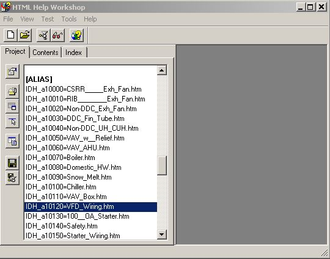

Расширение Visio воспринимается лучше, когда оно сопровождается справкой. В простейшем случае это может быть текстовый файл, иногда PDF. Если объем справочных сведений достаточно большой, то желательно оформить справку в формате CHM. Это уже несколько труднее, чем просто написать файл Word. Вот о справке в CHM и пойдет речь ниже.
Собственно, сделать CHM файл не составляет особого труда. Существуют бесплатные инструменты, помогающие либо конвертировать сайт в формат CHM, либо прямо в этом инструменте вручную набрать оглавление и текст страничек справки. Для вызова такой справки можно либо предусмотреть кнопку на риббоне, либо вызывать ее макросом. При этом вызванная справка по умолчанию позиционируется на главную страницу, а далее действуют кнопки управления движком справки.
Но иногда хочется напрямую вызвать страницу, связанную с определенным щейпом. Такой вариант тоже возможен. Документация Visio советует использовать меню Developer / Shape Name и вписывать ссылку в поле Help: в формате FILENAME!#Number, где FILENAME - имя файла справки, а Number - числовой ID нужной страницы, назначенный в MAP секции проекта справки. Предполагается, что достаточно вписать туда нечто типа ShapeHelp.chm!#20000 и при нажатии на F1 откроется заданная страница справки. Кстати, попробовал и так и не добился успеха. По F1 упорно открывается стандартная справка Visio. Поэтому пришлось поискать другие методы.
Успешными оказались вызов через VBA и функция HELP().
Вызов через VBA
При вызове через VBA методом .InvokeHelp можно использовать как имя CHM файла, так и полный путь к нему. Имя работает если файл справки размещен рядом с документом или путь к файлу прописан в File locations. В иных случаях - просто писать полное имя, как в примере:
Application.InvokeHelp "testhelp.chm", 15, 0
Application.InvokeHelp "C:\temp\h2c\testhelp.chm", 15, 0Третий параметр - Help Context ID топика. Тот числовой идентификатор, который советовали писать в документации Visio.
Функция HELP()
Функцию HELP() можно использовать в контекстном меню шейпа, то есть добавлять через секцию Actions. Формат приблизитеьно такой
=HELP("testhelp.chm!#10000")Как получить Help Context ID
Вопрос закономерный, потому как далеко не все инструменты с ним работают. Например, распространенный htm2chm формирует выходной CHM без секции MAP. То есть если требуется выход на конкретные страницы справки из шейпов, то для формирования справки нужно искать другой инструмент.
Зато хорошо подходит HTML Help Workshop от Microsoft. В нем можно росматривать или редактировать содержание, видеть текст проекта. Собственно, проект это обычный текстовый файл, который можно редактировать, что позволяет вставить секции [MAP] и [ALIAS]. Разберем на примере структуру этих секций.

[MAP]
#define IDH_a10000 10000
#define IDH_a10010 10010
#define IDH_a10020 10020
[ALIAS]
IDH_a10000=CSRR_____Exh_Fan.htm
IDH_a10010=RIB________Exh_Fan.htm
IDH_a10020=Non-DDC_Exh_Fan.htmСекция [MAP] сопоставляет метку (например, IDH_a10000) определенному числу (10000). Секция [ALIAS] назначает этой же метке имя файла, то есть имя страницы справки. Таким образом, если при вызове указать ContextID = 10000, то движок справки доберется до метки IDH_a10000 и по ней вычислит файл топика CSRR_____Exh_Fan.htm.
Таким образом расписываются все контекстные страницы, которые впоследствии будут вызываться из шейпов документа или элементов управления форм VBA.
Подведем итог
Кратко суммируем, что же нужно сделать, чтобы сопроводить изготовленный трафарет (Stencil) CHM справкой для каждого имеющегося в нем мастера.
1. Скачать HTML Help Workshop.
2. Сделать и собрать в папку HTML странички по одной для каждого мастер-шейпа.
3. Создать текстовый файл с расширением .hhp, заполнить в нем секции [FILES], [MAP], [ALIAS].
4. Запустить HTML Help Workshop и, скомпилировав проект, получить файл CHM.
5. Добавить в мастер-шейпы строку Actions для вызова справки функцией HELP() или обеспечить этот вызов через VBA методом InvokeHelp.
6. Позаботиться, чтобы на местах установки путь к справке был указан в настройках Visio.
Примечания
Я не упомянул про файл оглавления, потому что для контекстной справки он не нужен. При необходимости узнать о нем можно в документации HTML Help Workshop или в любом руководстве по изготовлению справки.
Последнюю редакцию HTML Help Workshop всегда можно разыскать на сайте Microsoft.
Полезной может оказаться программка htm2chm (гуглить). Скомпилирует справку без контекстных вызовов или декомпилирует CHM файл, если хочется конструкцию или оформление сделать, как в имеющемся образце.
Существуют и постоянно появляются приложения (в том числе платные), специально предназначенные для разработки справок в разных форматах. При желании можно найти, но они могут быть дорогими, либо сложными для обучения, либо делать не совсем то, что нужно и т.д.